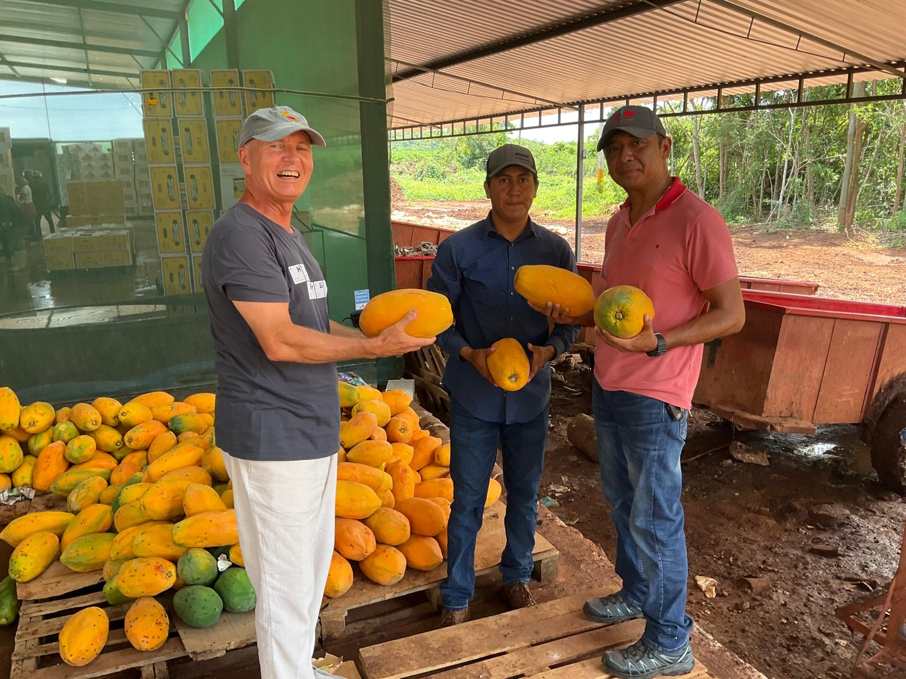
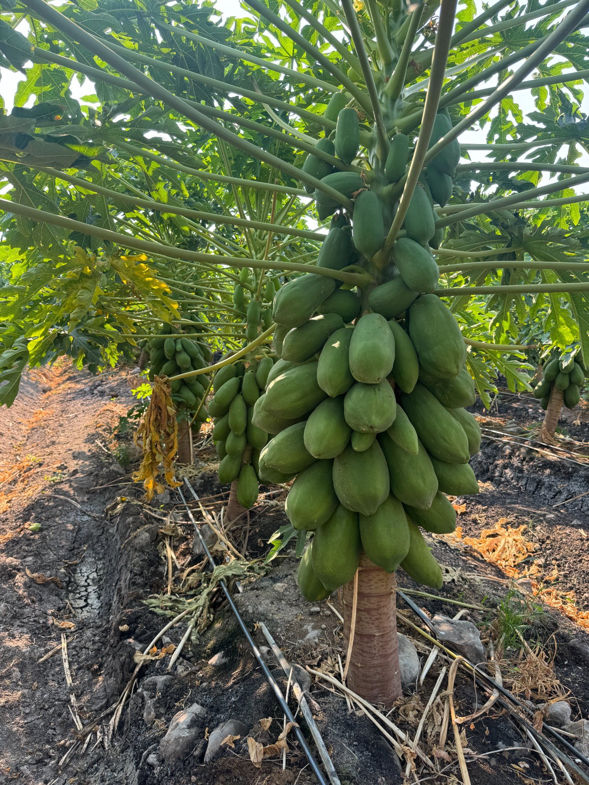
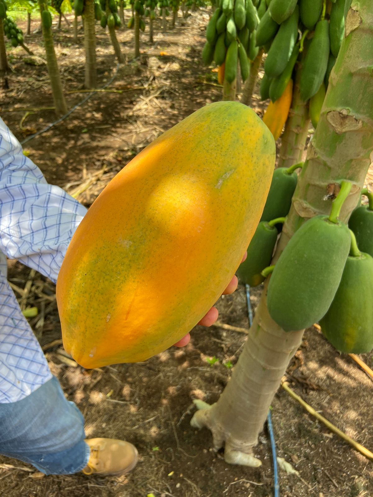
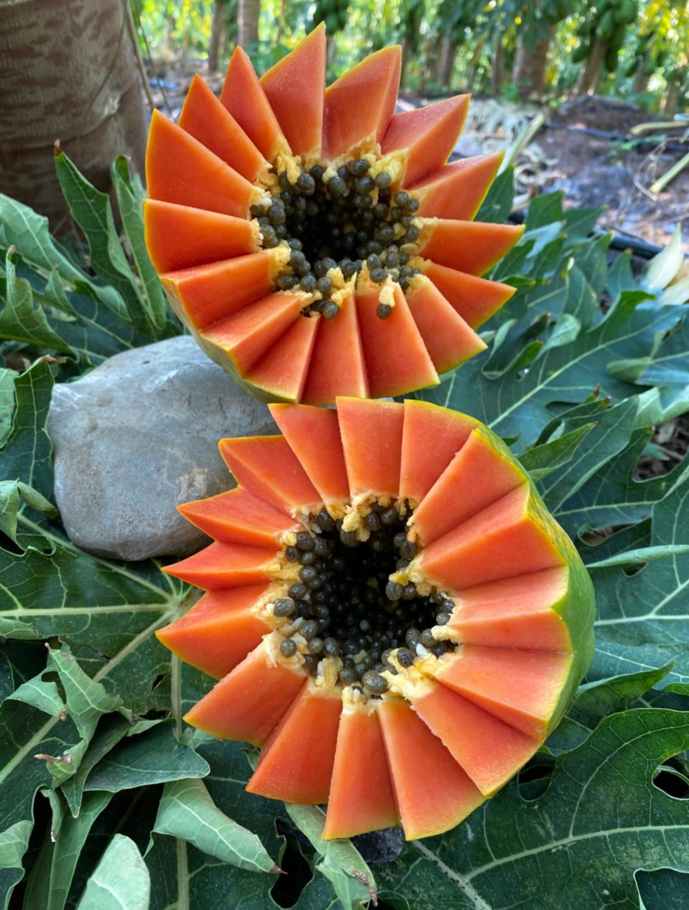

Maradona, Belanova, Vega y Red Sugar — variedades desarrolladas para maximizar rendimiento, calidad de fruto y adaptación a las condiciones del campo mexicano.




Genética de vanguardia para el campo mexicano. Nuestros híbridos requieren un manejo diferenciado frente a variedades OP — y los resultados lo justifican.
Copa muy ancha, raíz amplia y tallo grueso. Excelente anclaje incluso en condiciones de fuertes vientos.
Pulpa firme con alta tolerancia a hongos de postcosecha (antracnosis), prolongando la vida comercial.
Más de 60 frutos por planta y cosechas continuas de hasta 12 meses con frutos de primera calidad.
Color intenso, maduración uniforme, alto contenido de grados Brix y sabor excepcional para exportación y mercado nacional.
Alta tolerancia a VMAP, Meleira y ácaros, reduciendo pérdidas fitosanitarias significativamente.
Tolerancia al frío durante el transporte a 8–9 °C, ideal para cadenas logísticas largas y exportación.
Cuatro variedades diseñadas para distintos ciclos productivos y mercados de destino.
Planta muy vigorosa con excelente anclaje, favorecida en condiciones de fuertes vientos. Alto potencial de rendimiento especialmente en siembras entre mayo y septiembre. Buena tolerancia a Virus y Ácaros.
Frutas con excelente tamaño (8s y 9s) para mercado doméstico y exportación. Gran firmeza de pulpa, color intenso y maduración uniforme. Alta tolerancia a hongos de postcosecha en condiciones de lluvias (antracnosis).
Planta muy fuerte con alta productividad principalmente en época de lluvias (trasplantes mayo–septiembre). Alta tolerancia a Virus y Ácaros.
Frutas con excelente tamaño (8s y 9s) para mercado doméstico y exportación. Firmeza de pulpa media, color intenso y maduración uniforme. Vira de color rápidamente en campo, facilitando la identificación del punto óptimo de cosecha.
Planta muy fuerte con alta productividad tanto en época de lluvias como en épocas secas (trasplantes mayo–enero). Alta tolerancia a Virus y Ácaros.
Frutas medianas (9 & 12) con buena firmeza de pulpa, buen formato, color intenso, muy buen sabor y excelente vida de anaquel. Vira de color rápidamente.
Plantas fuertes con alta productividad en lluvias y seca (mayo–enero). Tolerancia a VMAP, Meleira y ácaros.
Frutos de excelente tamaño, color intenso y uniforme. Pulpa de muy alta firmeza, superior a los estándares comunes, y alto contenido de grados Brix. Ritmo de maduración más lento — ventaja para exportación de largo recorrido.
Los híbridos EWS requieren un manejo diferenciado frente a variedades OP para alcanzar su potencial genético completo.
Calendario óptimo según variedad y condiciones climáticas de la región.
1,550–1,750 pl/ha. Sexado a los 45–50 días después del trasplante.
Bioestimulación con aminoácidos, citocininas y microelementos desde los 45 ddt.
Goteo manteniendo capacidad de campo en los primeros 30–40 cm de suelo.
Control preventivo de fitoplasmas, virus, ácaros y hongos de follaje.
Cada híbrido tiene su ventana óptima para maximizar el cuajado de frutos y la calidad.
Se sugiere trasplantar de mayo a septiembre. Trasplantes de octubre a marzo presentan problemas de abortos y deformación de frutos por las condiciones de temperatura y floración invernales.
Más estables para el cuajado de frutos. Se pueden trasplantar de mayo a enero. No recomendable entre febrero y marzo por las altas temperaturas y sequía que coinciden con la floración.
Los híbridos EWS son de copa muy ancha, raíz muy amplia y tallo muy grueso. El espaciamiento correcto es clave para alcanzar el potencial productivo.
4 plantas por posición a hilera seguida (40 cm). Menor competencia en primeros 3 meses. Para exportación. Plantas no quedan equidistantes.
Facilita mecanización y bancos de frutos continuos. Plantas equidistantes. +60 frutos/planta y cosechas de 12 meses de primera calidad.
Protocolo semanal basado en las demandas nutrimentales reales del cultivo para alcanzar 150 ton/ha.
Programa Maradona F1 · Tamaulipas. Lunes: fosfonitrato + nitrato de potasio + microelementos. Miércoles: ácido fosfórico. Viernes: nitrato de calcio + nitrato de magnesio. Meses 1–4: enraizador cada 15 días (2–4 kg/ha).
El cultivo de papaya extrae por tonelada producida los siguientes nutrientes. Conocer el estado nutrimental endógeno (muestreo de peciolos mensual desde los 90 ddt) es fundamental para ajustar el programa.
En 11 años de siembras comerciales, el agua es el principal insumo de producción. Su manejo correcto es determinante del éxito.
La clave es mantener siempre en capacidad de campo los primeros 30–40 cm de la superficie del suelo, en todo el ancho de copa, y mantener seca la raíz pivotante a profundidades mayores de 40–50 cm para evitar pudriciones y pelazón de frutos.
La falta de aireación de las raíces provoca pudrición anaeróbica en xilema y floema, con entrada de hongos del suelo que ascienden hasta el pedúnculo. Una huerta dañada de la raíz es muy difícil y costosa de recuperar.
Goteo: Usar 3 o 4 cintillas para humedecer todo el ancho de copa. Especialmente en Maradona y Belanova a los 4–5 meses de trasplante.
Temporada seca: Mínimo 24 hrs semanales con doble cintilla, o 18 hrs con 3–4 cintillas de goteo a 10 lb de presión.
Aireación crítica: La raíz debe disponer de 30–40% de aireación dentro del suelo. Usar pulsos de riego para evitar encharcamiento profundo.
Para facilitar el flujo de floración y cuajado de frutos. Especialmente importante en Maradona F1.
Cuando los híbridos se trasplantan en época de lluvias, el sexado se puede realizar a los 45–50 días. A partir de entonces es importante cuantificar las flores por axila y los frutos cuajados semanalmente.
Con 2 frutos cuajados por semana durante el período fresco (oct–mar) llegaremos a 48 frutos por planta. Con 3 frutos cuajados por semana, podríamos llegar a 72 frutos por planta.
Prevención y control de las principales amenazas sanitarias del cultivo de papaya en México.
Empoasca y otros vectores transmiten fitoplasmas causando cogollo arrepollado, acortamiento de entrenudos, clorosis y necrosis. Se intensifican en otoño–invierno con migraciones de insectos.
En períodos de 8–10 días con temperaturas 15–20°C y alta humedad, Asperisporium carica y Corynespora cassicola atacan follaje y frutos.
Cada 7–10 días, 3 veces consecutivas: Aminoácidos 3.5% (1 kg) + Citocininas 1% (0.5 L) + Oxicloruro de Cobre 50% (1 kg) + Oxitetraciclina 5% (1.2 kg) + Microelementos Zn,Fe + Insecticida sistémico. En 600 L agua.
Identificar: hojas arrosetadas, clorosis apical "atigramiento", manchas blancas en entrenudos, tallo adelgazado, frutos estrechos en el pedúnculo.
Para control de Empoasca, Psílidos y Cicadellidae. Aplicar preventivamente al detectar presencia inicial, especialmente en los primeros 5 meses de trasplante.
La falta de aireación provoca pudrición anaeróbica. Los hongos del suelo ascienden hasta el pedúnculo causando pelazón de frutos. Una huerta dañada es muy difícil y costosa de recuperar.